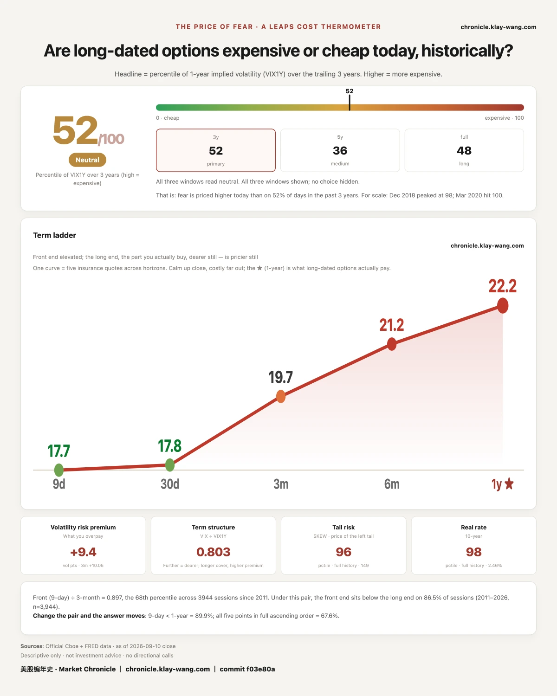
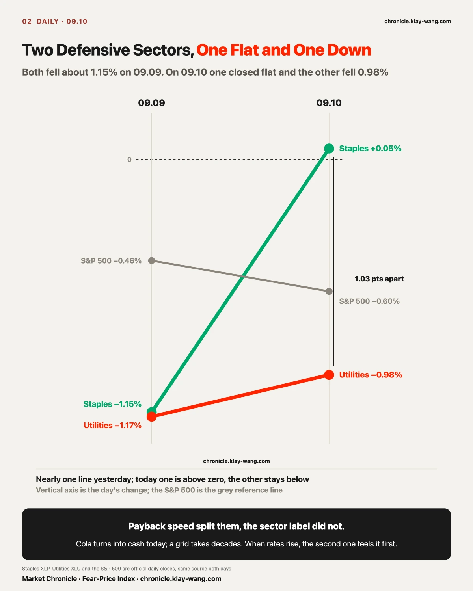
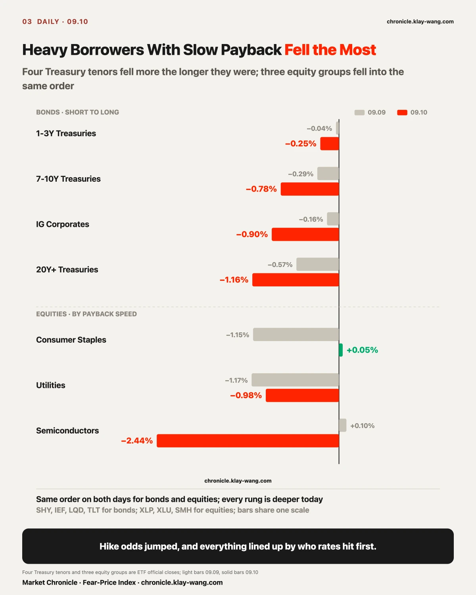
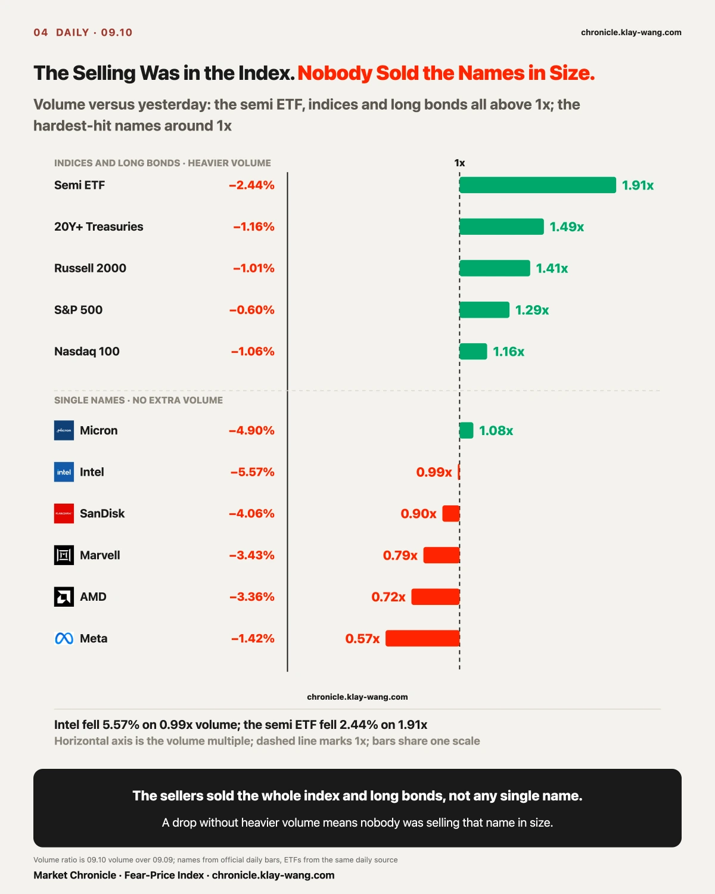
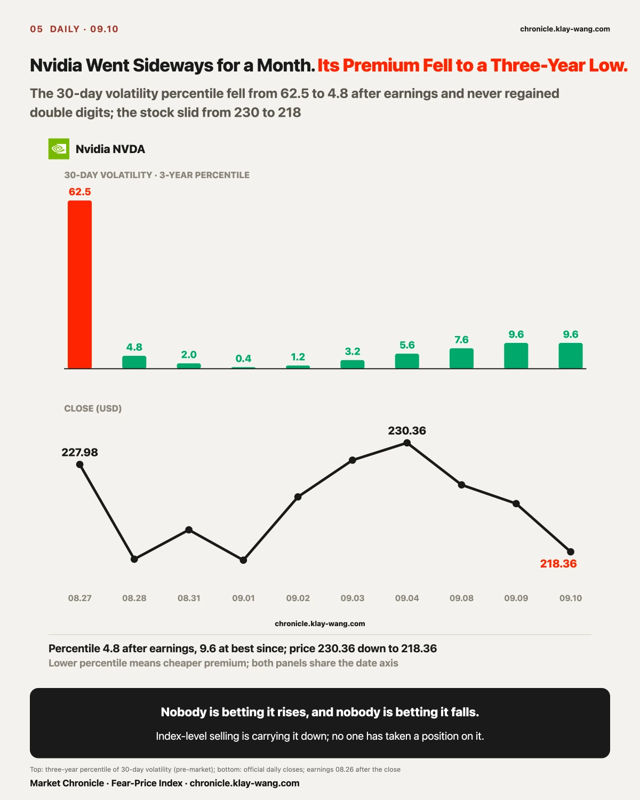
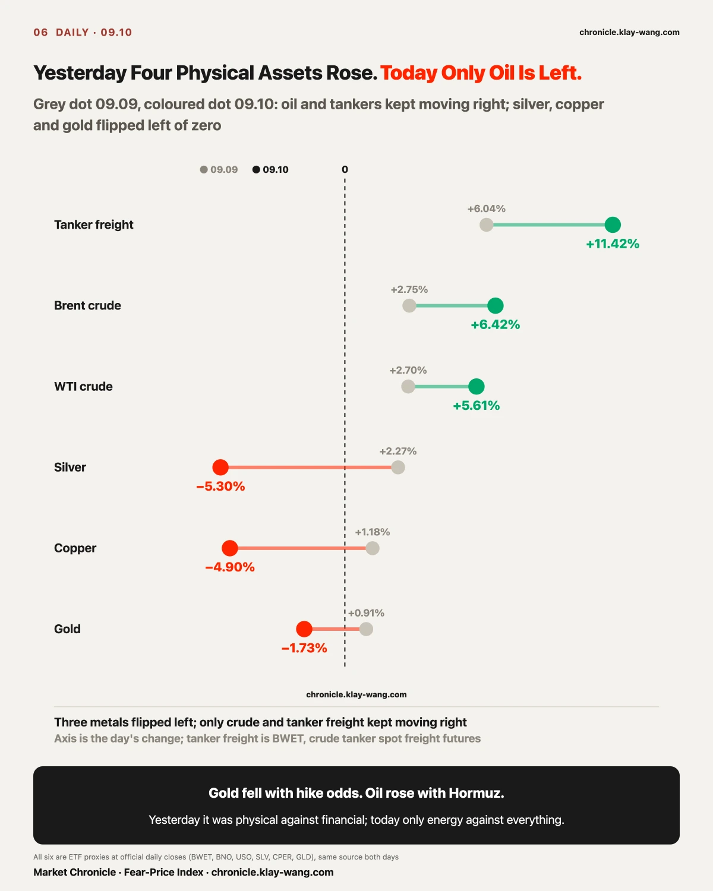

Fear-Price Index · 2026-09-10 · reading 52.4/100: one-year implied volatility VIX1Y at 22.23, the 52.4th percentile of the past three years, higher means dearer. Daily ledger and methodology → chronicle.klay-wang.com · Please credit: Fear-Price Index · chronicle.klay-wang.com
The three-year percentile moved from 47.6 to 52.4, back above the midpoint. The five tenors: nine-day 17.70, one-month 17.84, three-month 19.73, six-month 21.17, one-year 22.23.
The same line, seen in premium: the nine-day tenor added 2.11 in a day, the one-year added 0.26. Tomorrow's CPI got its own price. A year from now barely moved.
Whoever bought protection bought the whole index and did not pick names. S&P thirty-day premium went from 13.11 to 14.35, Nasdaq from 19.02 to 20.12; the same day Nvidia went from 33.79 to 33.10, Meta from 39.88 to 38.79, Tesla from 41.28 to 40.16.

August PPI rose 5.4% year over year, above the 5.3% expected. But core rose only 0.2% month over month, below the 0.3% expected; services rose 0.1%, the smallest since May. What lifted the headline was energy, up 4.2%, with diesel alone up 24.1%, more than a third of the goods increase from one line item.
The data says what got expensive is oil. The market voted with its feet anyway: the CME probability of a September hike jumped from 60.2% before the print to 75%.
At one in the afternoon the Treasury auctioned 22 billion dollars of thirty-year bonds at 5.308%, 9.2 basis points above last month's sale. Plenty of buyers, with indirect bidders taking 79.5%. They just wanted a higher price.
Once the bets jumped, every section below is one square of the same thing: when rates rise, who feels it first.

Consumer staples and utilities are both normally filed under defensive. Yesterday consumer staples fell 1.15% and utilities fell 1.17%, side by side. Today staples closed at 83.09, up 0.05%; utilities closed at 42.52, down 0.98%.
Sector labels do not explain this. Payback speed does. Staples sell cola, tissues, shampoo: goods go on the shelf today and turn into cash today. Utilities are grids, water plants, pipelines: a line goes into the ground and takes decades to pay back, with a large pile of long-term debt on the balance sheet. When rates rise, the second kind feels it first.
Treasuries laid the order out more cleanly. Today one-to-three-year fell 0.25%, seven-to-ten-year fell 0.78%, investment-grade corporates fell 0.90%, twenty-year-plus fell 1.16%. From short to long, each rung fell more than the one before, with no exception in the middle. Yesterday ran in the same order: 0.04%, 0.29%, 0.16%, 0.57%. Every rung is deeper today.
The slowest payback in equities is semiconductors: today's capital spending waits for orders two or three years out, and capacity for 2028 is being paid for now. Over five days it went +0.39%, +2.61%, +1.19%, +0.10%, and today −2.44%, the first negative day after four up. Software collects subscriptions monthly; it fell 0.62%, the shallowest of its four straight down days.
The memory chain fell hardest: Intel −5.57%, Micron −4.90%, Sandisk −4.06%, Dell −5.35%. These are exactly the names that rose most over the past month.
Citi's conference notes mention Nvidia's next-generation rack may carry less HBM and use optical interconnects to link racks, so memory lost its seat. That explanation fails today. Optical fell harder. Lumentum lost 5.39%, more than twice the semiconductor ETF's 2.44%. Money did not rotate from memory into optics. Both got sold, because both sit at the slow-payback end.
After the close, Oracle offered a counterpoint. It is the textbook heavy borrower with slow payback: 28.5 billion dollars of capital spending in one quarter, free cash flow of minus 5.4 billion. In the regular session it fell 5.38% along this line to 152.94. Then earnings showed remaining performance obligations of 664 billion dollars, about half converting to revenue within 36 months, and a free-cash-flow loss four billion smaller than the minus 9.56 billion expected. The stock rose 4.35% after hours to 159.59. During the day it was sold for slow payback; at night it produced a payback schedule. After-hours prices are not closes. Tomorrow will tell.
The same day Microsoft was reported to be planning to take data-center capacity from 12 gigawatts to more than 38 by 2032, with the four largest hyperscalers committing close to 2.4 trillion dollars over the coming years. The slow-payback end is still adding money.
Put today's pieces together and it is a loop. The giants add capital spending and pay for it with debt and customer prepayments. More debt pushes long yields up: yesterday's ten-year auction cleared at 4.834%, the highest ever for that tenor, and today's thirty-year at 5.308%. When rates rise, heavy borrowers with slow payback get repriced first. And the heavy borrowers with slow payback are the very companies issuing debt to build, plus the memory, foundry and optics names that supply them. Today's line, who rates hit first, is that loop turning one notch. It stops when one of two numbers changes: long yields stop reacting to issuance days, or customer prepayments grow large enough to close the debt window. Oracle funded four tenths of this quarter's capital spending with customer prepayments. Next quarter, watch which way that share moves.

Who is doing the sorting shows up in volume.
The names that fell hardest did not trade on heavy volume: Intel traded 0.99 times yesterday's volume, Micron 1.08, Sandisk 0.90, AMD 0.72, Marvell 0.79. A decline without heavier volume means nobody was selling that name in size.
The heavy volume was at the other end: the semiconductor ETF traded 1.91 times yesterday's volume, twenty-year-plus Treasuries 1.49 times, the Russell 2000 1.41 times, the S&P 1.29 times. The sellers sold the whole index and long bonds. They did not target any single name.
Nvidia is the most extreme case. First, fix the premise: over the twenty-two sessions from 08.10 to 09.09 it fell 0.13%, which is to say it went sideways. Over the same span Sandisk rose 45.53%, Micron 17.12%, AMD 7.81%. The name that actually fell this month was Broadcom, down 14.82%. Nvidia sits 5.44% below its one-year high, the smallest drawdown in the group.
The last four days are a real retreat: 230.36 on 09.04, then −2.01%, −0.91%, and −2.37% today to 218.36.
Yet its premium sits near a three-year low. Its thirty-day volatility percentile over three years was 62.5 on 08.27, before earnings. Once earnings passed it collapsed to 4.8 on 08.28 and has not returned to double digits in the eight sessions since. Today it is 9.6, the lowest of the twenty-one names we track.
The price is falling, and nobody is betting it rises or betting it falls. It is being carried down by the index-level selling, without anyone taking a position on it. The money willing to bet on it went three months out: the December 245 calls traded 40,620 contracts today, four times open interest, at a strike 12% above the close.

Commodities split along the same line.
Yesterday's line: the synchronized decline was physical assets repricing against financial ones. Oil rose 4.26%, silver 2.49%, copper 1.77%, gold 1.20%, while stocks, bonds, the dollar and crypto all fell.
Today Brent rose 6.42% and WTI 5.61%. Silver fell 5.30%, copper 4.90%, gold 1.73%. Three of the four legs gave way.
The biggest gain today belonged to the ships that carry oil, ahead of the oil price itself. BWET, which tracks crude tanker spot freight futures, rose 11.42% to close at 650, up 46-fold in a year. It has no fundamentals and no dividend. The whole fund is one ticket betting Hormuz stays blocked, and on the ceasefire rumor in June it lost 41.2% in four sessions.
Gold falling behind and oil holding up are tracking different things. UBS's Joni Teves laid out the gold side in yesterday's precious metals note: August payrolls of 162,000 were roughly three times expectations, hike odds had already risen to around 62%, and yet gold's pullback was limited. Their read is that the market has already digested most of the tightening. Today hike odds jumped another dozen points and gold fell 1.73%, inside the kind of contained pullback they described. Oil tracks Hormuz, not the Fed, so it did not fall.
UBS also gave an asymmetry: if the hike lands, gold dips modestly, held up by seasonal physical demand and official-sector buying on weakness; if the Fed holds, gold's upside is sharper, because a hold would be read as a policy error.
Tomorrow at the same hour, August CPI. The market's brackets are plain: core at 0.1% or lower, most likely no move; 0.3% or higher, a hike is all but certain; exactly 0.2%, nobody knows. That gives us a ledger to settle tomorrow: a hike means gold dips modestly, a hold means gold rallies hard. Gold already fell 1.73% today. Tomorrow, see whether that dip stayed modest.
Yesterday's kill condition was written tight: if gold and bonds rise together the next day, the read is withdrawn.
Today gold fell 1.73% and twenty-year-plus Treasuries fell 1.16%. By the written condition, it was not triggered. The other counter-check did not appear either: yesterday said that in a true flight to safety, staples and utilities should outperform. Today staples closed flat and utilities fell 0.98%. Neither beat the S&P's −0.60%.
The criterion was not wrong. It was incomplete. It only considered physical versus financial, not that the physical side could split internally. Today three of the four physical assets fell alongside financial ones and only oil held.
Yesterday's line, rewritten for today: what got repriced was energy against everything else, not physical against financial. Its kill condition changes with it: if after tomorrow's CPI oil and gold fall together, then the energy side was also just tracking hike odds, and this read is withdrawn.
The 09.08 case had two halves: close above 100, and open interest in the 09.18 100 calls lower than on 09.08.
The first half was close. Intel fell 5.57% today to 100.32, with a low of 99.34, 32 cents from the line.
The second half could only be measured today. Open interest in the 09.18 100 calls was 52,210 on 09.08, 41,499 after yesterday's settlement, 40,622 today. Down 10,711 contracts, more than a fifth. The old position is being cashed out. Confirmed.
The same table confirmed the other half: the 31,038 contracts of 115 calls bought fresh on 09.08 took open interest from 16,816 to 35,948, so six in ten stayed. Those that stayed are marked at 0.47 today, down 72% from the 1.70 paid on 09.08. The call was right. The people who chased were not.